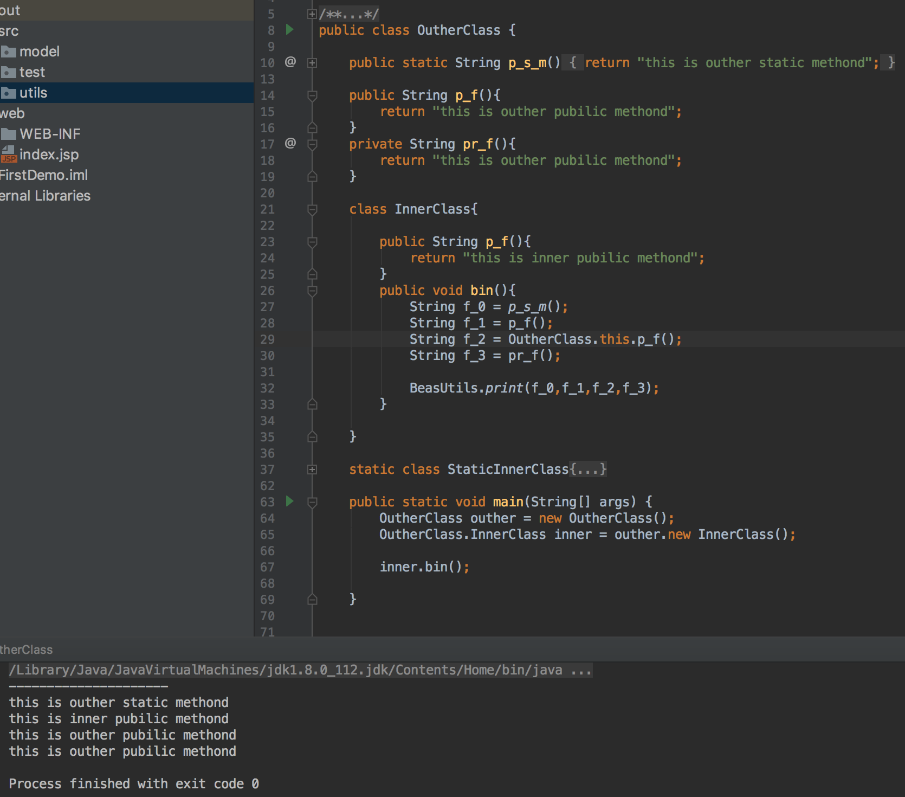

先说结论（基于JDK 1.7）：
- 内部类能直接使用外部类所有元素（包括私有），而且无需显示构造外部类对象；
- 内部类没有被声明为静态则无法在内部使用静态元素；
- 内部类和外部类有同名属性，在内部类方法中调用时优先使用内部类属性；
- 内部类要在方法中使用外部类同名属性，需要指定外部类.this.属性来进行调用；
- 外部类要使用内部类的任意元素，都需要显示构造内部类对象；
- 内部类和外部类有同名方法时，使用规则参和同名属性相同；
- 内部类对象不能直接被创建，需要先创建外部类对象，再尤其创建内部类；
贴个代码解释一下（属性部分）：
这是输出结果：
这是方法部分的代码和输出：

这里明确一点：静态内部类和内部类是从设计上被区别开的；内部类属于一个类的一部分，而静态内部类则被称作“嵌套类”，它的设计初衷是为了方便逻辑上的精简和从封装上来说易于调用；
- 静态内部类只能直接外部类的静态元素；
- 静态内部类可以定义静态元素（这很屁话）；
- 同名属性和方法的访问规则同内部类；
- 外部类可以直接使用静态内部类中被声明为静态的方法和属性；
内部类和嵌套类（静态内部类）的构造方式：
咦你问我为啥不贴代码？这么简单的东西自己写啊蠢货！
差不多就这些，想到再更新；
【The End】